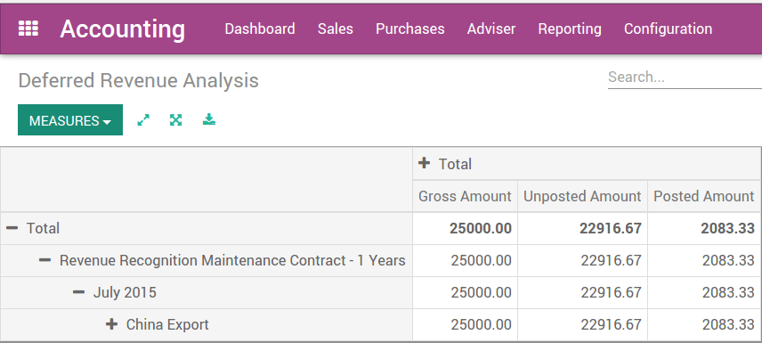

Deferred/unearned revenue is an advance payment recorded on the recipient's balance sheet as a liability account until either the services have been rendered or the products have been delivered. Deferred revenue is a liability account because it refers to revenue that has not yet been earned, but represents products or services that are owed to the customer. As the products or services are delivered over time, the revenue is recognized and posted on the income statement.
For example: let's say you sell a 2 year support contract for $24,000 that begins next month for a period of 24 months. Once you validate the customer invoice, the $24.000 should be posted into a deferred revenues account. This is because the $24,000 you received has not yet been earned.
Over the next 24 months, you will be reducing the deferred revenues account by $1,000 ($24,000/24) on a monthly basis and recognizing that amount as revenue.
Configuration
Module installation
In order to automate deferred revenues, go to the settings menu under the application and activate the Assets management & revenue recognition option. This will install the Revenue Recognition Management module.
Note
In some version of Odoo 9, besides checking this option, you need to install the "Revenue Recognition Management" module. If you are using Odoo 9, you might check if the module is correctly installed.
Define deferred revenue types
Once the module is installed, you need to create deferred revenue types. From the Accounting application, go to the menu .
Example: 12 months maintenance contract
Some example of deferred revenues types:
- 1 year service contract
- 3 years service contracts
Set deferred revenues on products
Once deferred revenues types are defined, you can set them on the related products. On the product form, in the Accounting tab, you can set a deferred revenue type.
Here are some examples of products and their related deferred revenue types:
| Product | Deferred Revenue Type |
|---|---|
| Support Contract: 3 years | 3 years service contracts |
| Netflix subscription: 3 years | 3 years service contracts |
| Flowers every month | 1 year product contract |
Sell and invoice products
Once the products are configured, you can create a customer invoice using this product. Once the customer invoice is validated, Odoo will automatically create a deferred revenue for you, and the related journal entry.
| Account | Dr | Cr |
|---|---|---|
| Accounts receivable | 24000 | |
| Deferred revenue account | 24000 |
Then, every month, Odoo will post a journal entry for the revenue recognition.
| Account | Dr | Cr |
|---|---|---|
| Deferred revenue account | 1000 | |
| Service revenue account | 1000 |
Reporting
To analyze all your current contracts having a deferred revenue, you can use the menu Reporting > Deferred Revenue Analysis.
